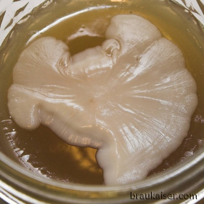

Yeast Bank contents
This is a list of the current contents of the yeast bank I'm maintaining. It is mostly a reference for fellow club members. The strain origins are taken from Kristen England's yeast comparison chart hosted at mrmalty.com
Some yeast descriptions include pictures of their giant colonies. Giant colonies are yeast colonies grown on thick agar which allows for the growth of a much lager colony than what is possible in normal petri dishes.
Lager
German
WLP830
- origin: White Labs vial
- first cultured: April 2008
- storage: slant and stab cultures
- strain origin: Weihenstephan yeast bank W34/70, most commonly used yeast in German lager brewing
- notes: White Labs yeast strain description: WLP830
WLP800
- origin: given to me by a fellow home brewer
- first cultured: March 2008
- storage: slant and stab cultures
- strain origin: Pilsner Urquell
- notes: White Labs yeast strain description: WLP800
WY2042

{kind=link}
Giant yeast colony WY2042
- origin: yeast samples given to me by a fellow home brewer
- first cultured: April 2008
- storage: slant culture
- strain origin: Miller via Carlsberg
- notes: Wyeast strain description WY2042 - Danisch Lager
WLP833
- origin: yeast samples given to me by a fellow home brewer
- first cultured: April 2008
- storage: slant culture
- strain origin: Brauerei Aying
- notes: White Labs yeast strain description: WLP833
WY2206

Giant yeast colony WY2206
- origin: Activator pack
- first cultured: March 2007
- storage: slant culture
- strain origin: Weihenstephan yeast bank W206
- notes: Wyeast strain description WY2206
American
WY2007
- origin: Activator pack
- first cultured: April 2007
- storage: slant culture
- strain origin: Budweiser, Anheuser Bush. I'm fairly confident that this is the AB strain after seeing a paper from Charlie Bamforth that used this strain (WY2007). He seems to be doing a lot of work with and for AB.
- notes: Wyeast strain description: WY2007 - Pilsen Lager
WY2035
- origin: Propagator pack
- first cultured: November 2010
- storage: slant culture, stab culture
- strain origin: August Schell.
- notes: Wyeast strain description: WY2035 - American Lager
Ale (other than Belgian or Weissbier)
German
WY1007

Giant yeast colony WY1007
- origin: Activator Pack
- first cultured: December 2006
- storage: slant and stab culture
- strain origin: Zum Uerige, Altbier brewery in Duesseldorf (Germany).
- notes: Wyeast strain description: WY1007 - German Ale
WY2565
- origin: Activator Pack
- first cultured: May 2007
- storage: slant and stab culture
- strain origin: Weihenstephan W165
- notes: Wyeast strain description: - Koelsch
British
WLP002

Giant yeast colony WLP002
- origin: White Labs vial
- first cultured: 0ctober 2008
- storage: slant and stab culture
- strain origin: Fullers
- notes: White Labs description: WLP002
WY1084
- origin: fellow home brewer
- first cultured: April 2010
- storage: slant and stab culture
- strain origin: Guinness
- notes: Wyeast strain description: - Irish Ale
American
WLP001

Giant yeast colony WLP001
- origin: White Labs vial
- first cultured: unknown
- storage: slant and stab culture
- strain origin: Sierra Nevada
- notes: White Labs description: WLP001
Weissbier
WLP300
- origin: 6 month old While Labs vial
- first cultured: February 2007
- storage: slant and stab culture
- strain origin: yeast bank Weihenstephan: W68
- notes: White Labs description: WLP300
WY3068

Giant yeast colony WY3068
- origin: activator pack
- first cultured: May 2008
- storage: slant culture
- strain origin: yeast bank Weihenstephan: W68, the most popular Weissbier yeast in Germany
- notes: Wyeast's description WY3068 - Weihenstephan Weizen.
WLP351-1
- origin: old While Labs vial
- first cultured: September 2006
- storage: slant and stab culture
- strain origin: Weihenstephan yeast bank W175, has likely mutated from that strain
- notes: This strain is behaving quite odd. If ferments way past the attenuation that other strains see as their limit of attenuation and it shows very poor head retention. It does however produce a nice strong clove aroma. Here is a blog entry mentioning this strain: Weissbier Experiment - Different yeasts
WLP351-2
- origin: given to me from a fellow home brewer
- first cultured: March 2008
- storage: slant culture
- strain origin: Weihenstephan yeast bank W175, I have not checked if this one hasn't mutated yet
- notes: White Lab's strain description: WLP351
KLWB
- origin: cultured from the dregs of a bottle of Koenig Ludwig Weissbier
- first cultured: November 2009
- storage: slant culture
- strain origin: bottle of Koenig Ludwig Weissbier
- notes: I don't know yet if this is their primary fermentation strain or a different yeast that is used for bottling.
SCHN
- origin: cultured from a bottle of Schneider Weisse Original
- first cultured: July 2012
- storage: slant culture
- strain origin: Schneider Brewery (Kelheim, Germany)
- notes: Based on its appearance under the microscope and fermentation tests, this is a true Weissbier yeast and not a different yeast used for bottling.
KUCH
- origin: cultured from a bottle of Kuchelbauer Weisse
- first cultured: July 2012
- storage: slant culture
- strain origin: Weissbierbrauerei Kuchelbacher (Abensberg, Germany)
- notes: Based on its appearance under the microscope and fermentation tests, this is a true Weissbier yeast and not a different yeast used for bottling.
Belgian
Hennepin
- origin: Fellow homebrewer, cultured from a bottle of Hennepin (Brewery Ommegang)
- first cultured: April 2010
- storage: slant culture
- strain origin: bottle of Hennepin (Brewery Ommegang)
- notes: not yet used